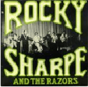
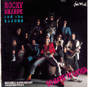

Rocky Sharpe and The Razors
(Courtesy of Sylvia Margot)
It all started in August '72. Brothers Robert and Jan Podsiadly aka Rocky Sharpe and Johnny Stud, along with friend Den Hegarty formed the group that was to introduce Britain to the great American Doo Wop sound of the fifties/early sixties. Rocky Sharpe and the Razors were born.
Their first gig was at a disco in Brighton where they performed not as the Razors but as a spoof of one of the brothers favourite bands Sha Na Na. They called themselves Shay Nay Nay. For that memorable first performance the group consisted of the following members:
Vocals: Rocky, Johnny, Den, Pat Atkinson, Ian Curtis and 'Fat' John.
Musicians:
Bass Guitar - Pete the 'Perv'??!!
Drums - Terry Storm
Lead Guitar - Adie
The band certainly loved their nicknames!!
Throughout the coming months keyboards and sax were added and many line-up changes took place. Amongst the more familiar ones were Ian Collier (Griff Fender) joining in the latter part of '72, Lydia Martin (Slick aka Rita Ray) joining in the latter part of '73, Nigel Truebridge (Horatio Hornblower) - sax - mid '75 and Iain 'Thump' Thomson at the very end of the Razors career mid '76.
The band although never charting developed a 'cult' following throughout the Brighton and surrounding areas and gained many faithful followers. Their career spanned from August '72 until late spring/early summer '76. There is some controversy over the actual date.
The Razors played their memorable last gig at the Nashville Rooms in Kensington London giving out paper tissues with a teardrop on to all their devoted fans and towards the end of the gig handed out bottles of champagne.
The rest as they say is history, after a brief acting career for Rocky, he and Johnny went on to form the Replays and Griff, Den, Rita, Horatio and Thump went on to form the Darts.
I think it is safe to say that the Razors were the Kings and Queen of British Doo Wop. Those who were lucky enough to see the Razors live I'm sure will remember the experience for ever.
Chiswick record company issued an EP and a CD, both after the band was dissolved.
Discography

"Drip Drop" - 1975 (Chiswick)
